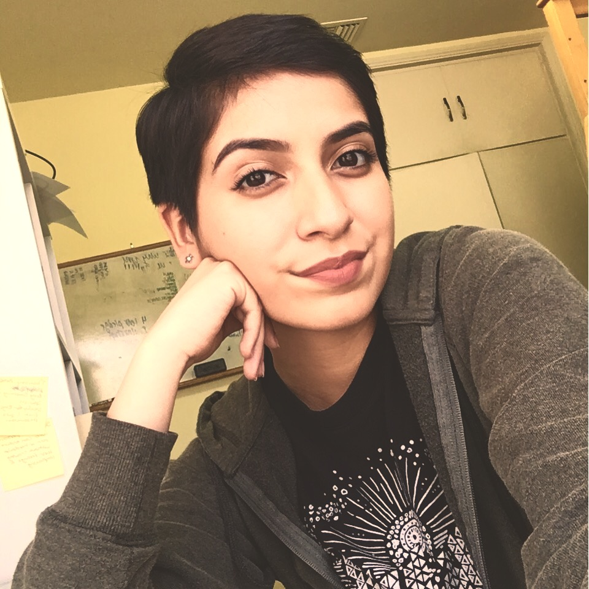
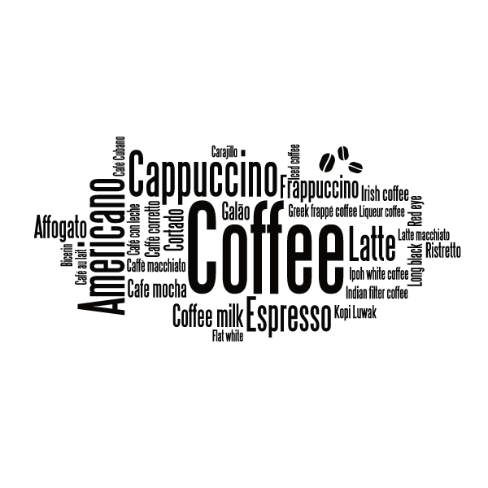

Jacky's Website
About Me
This is my About Me Page!
I grew up in El Monte, California. I moved to Chino midway through my 5th
grade year and went to Newman Elementary. From there I went to Ramona Junior
High and later Don Lugo Highschool where I have been since my freshman year.
In my freetime I mostly enjoy listening to music from any genre but mostly Indie.
I also like to sketch, play guitar, read, binge watch Netflix, or pick up a new
hobby in my freetime. I have a small family consisting of my parents, an older
sister, and my dog(pomeranian). In the future I would like to attend Cal Poly
San Luis Obispo, study Computer Science, and hopefully afterwards follow a career
or path I'm passionate about. I also require coffee to function.

